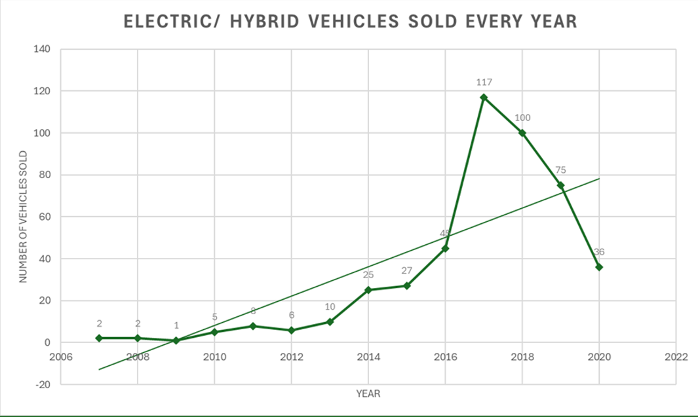
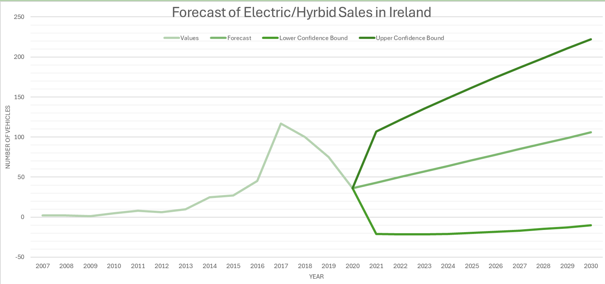
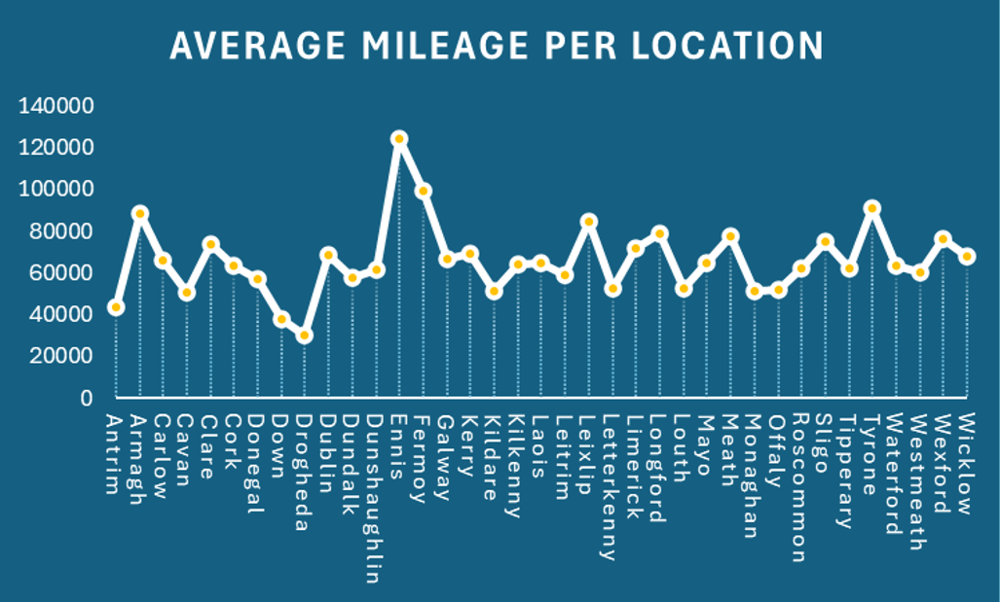

Irish Second Hand Car Market
This project was apart of one of my university modules. We were required to inspect a dataset, discover things about it that might be unexpected, confirm things about the data and learn about it. Afterwards, we created an oral presentation discussing our findings and telling the story about the dataset! This assignment was created through excel. This includes the visuals, data cleaning and examination of the data. Below, please find a few note worthy visuals and an explination attached. Additionally, the full powerpoint and oral presentation is available to download from my Github below.
When delving into the resale trends of electric and hybrid vehicles in Ireland, a notable exponential surge is evident from 2015 to 2017. However, following its peak in 2017 with 117 sales, there was a significant downturn, reaching a nadir of 36 sales in 2020, even lower than the figures recorded in 2016. While the declines in 2018 and 2019 pose a challenge for explanation, the sharp drop in 2020 can be attributed to the impact of Covid-19. The stringent lockdown measures meant people were less mobile, reducing the necessity for vehicles. Furthermore, amidst financial uncertainties during the pandemic, many individuals were likely hesitant to make substantial investments. Additionally, the relatively modest sales figures of electric vehicles depicted in the chart can be attributed to their status as a relatively novel and trendy product. Given that this data pertains to the second-hand market, individuals may be less inclined to part with their recently acquired electric vehicles.
The forecast results indicate the projected values for the years 2021 to 2030 based on the historical data provided. The Forecast trend line represents the estimated values for each year, while the Lower Confidence Bound and Upper Confidence Bound trend lines provide the range within which the actual values are likely to fall, with a certain level of confidence. For example, in 2021, the forecasted value is 42.99, with a lower confidence bound of -21.04 and an upper confidence bound of 107.03. This suggests that while 42.99 is the most likely forecasted value, there is a level of uncertainty, and the actual value could potentially range from -21.04 to 107.03. Similarly, for subsequent years, the forecasted values increase steadily, along with widening confidence intervals, indicating increasing uncertainty further into the future. These forecasted values can be valuable for making informed decisions and planning for future scenarios based on the provided data and associated uncertainties.
The dataset reveals that locations like Ennis, Fermoy, and Tyrone actually top the charts for average mileage. This is likely due to the limited availability of public transport options in these areas, coupled with their larger geographical size. Residents likely rely more heavily on personal vehicles for transportation, as they may need to travel longer distances to access essential services and amenities. Hence, the combination of limited public transport and extensive geographical spread results in higher average mileage in these locations. This contrasts counties like Dublin and Antrim which are more metropolitan and have more access to public transit.
Location
Barrie, Ontario, CanadaPhone
Social
- © Untitled
- Design: HTML5 UP